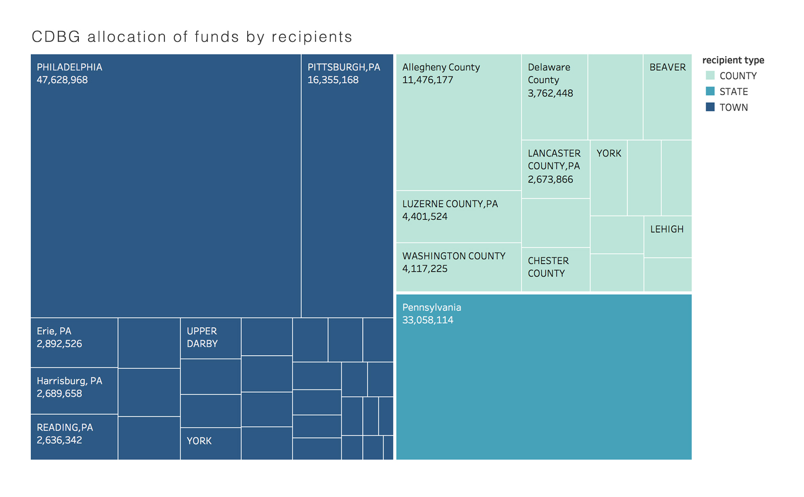
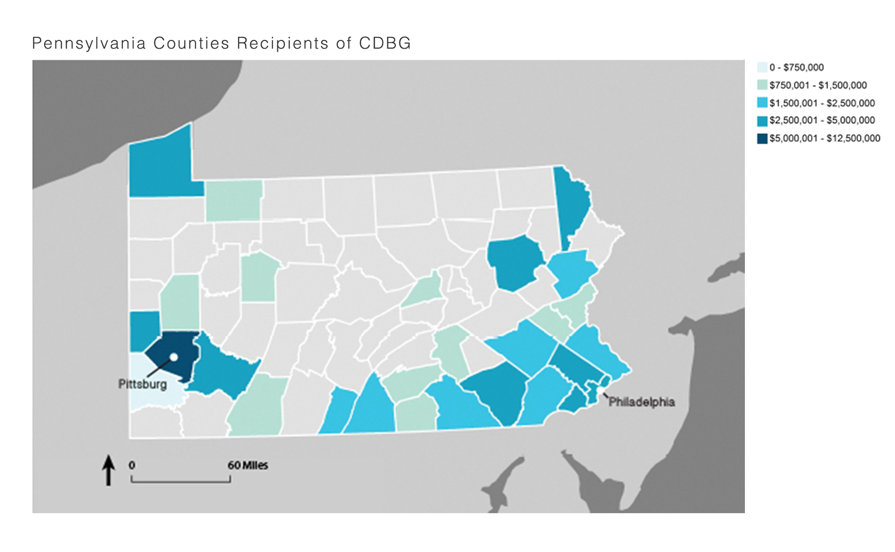

Mapping the Data
This chloropleth map shows how much each county receives in funding from Community Development Block Grants. Philadelphia and Pittsburg are notated to highlight how funding from these grants tends to cluster around the two largest cities in the state.

Sample D3 Code
Below is a sample interactive sankey visualization using code from D3.
Midterm presentation slides
Below are the slides of our Midterm presentation. They include changes regarding the last feedback received.